4 propostas para a seção de edições
Edições que
marcaram história
Cada opção é uma página com a seção completa. Role devagar dentro dela: toda a animação acompanha a rolagem, para frente e para trás.
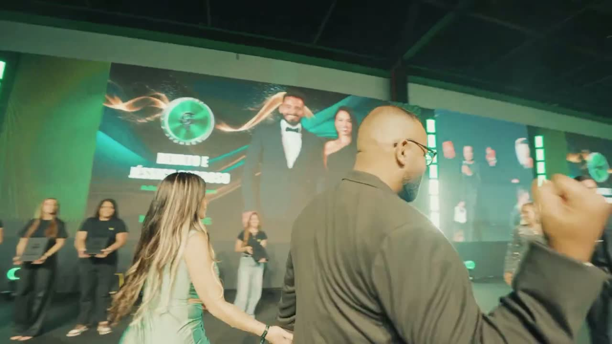
Opção A
Câmera no mosaico
Uma câmera dá zoom em cada edição dentro de um mosaico de momentos do evento, com legenda sendo digitada. No fim, o mosaico encolhe e as três edições se alinham sob a frase de destaque.

Opção B
Estrada de telas
Um corredor 3D de telas com cenas reais, e o nome de cada cidade pintado no chão como uma estrada. Cada edição é uma tela que cresce até ocupar a tela, e você atravessa para a próxima.

Opção C
Órbita
Cards giram num tambor enquanto palavras trocam no centro, depois se abrem num anel que gira destacando cada edição, e terminam com palavras de efeito e a frase final.

Opção D
Mural vivo
Momentos do evento voam do fundo em volta do título e pousam num mural 3D em diagonal, com fotos, números e depoimentos em movimento. Cada edição sobe do mural em perspectiva, e no fim tudo implode na frase de impacto.
Footer · variações do crachá
O crachá, sem caixa
a G4 está no site
Variações da G pedidas no retorno: abertas e de ponta a ponta, como a A e a D. A G4 foi a escolhida e já está no index, com a textura de pontinhos da hero no fundo.
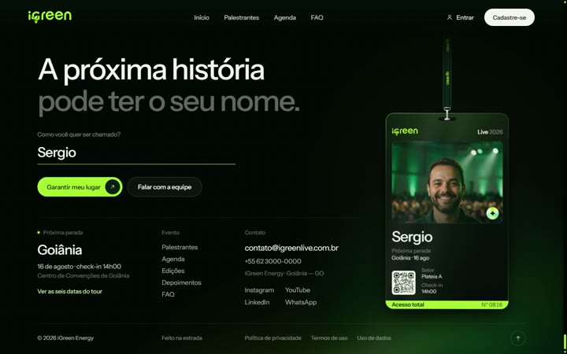
G4 · no site
Seu nome no crachá
"A próxima história pode ter o seu nome." O nome digitado é impresso no crachá na hora, letra por letra, e ele balança a cada tecla. Grade precisa como a da A.
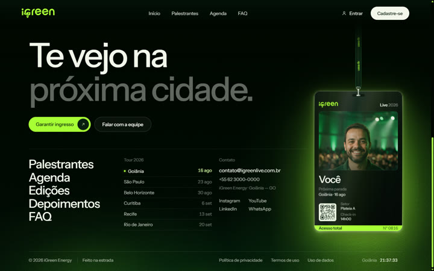
G1
Crachá na aurora
A aurora da D, mais baixa, com o brilho atrás do crachá como contraluz. Frase da B no alto, menu, tour e contato embaixo.
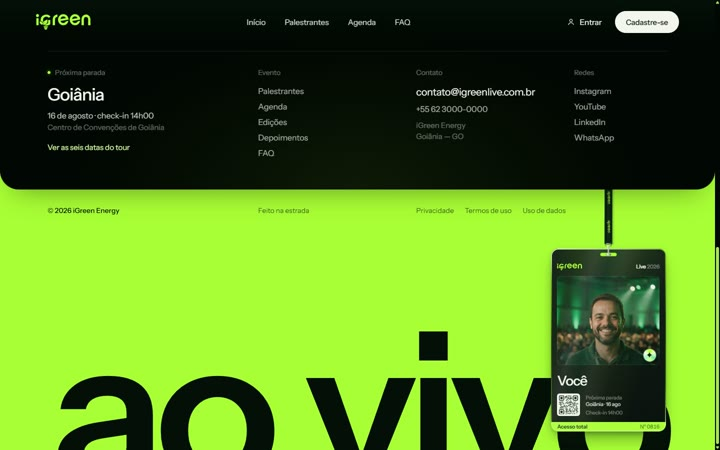
G2
Crachá no bloco lima
A estrutura da A: o cordão fica preso na borda da folha escura, que sobe e puxa o crachá; ele termina balançando sobre a faixa lima, na frente do "ao vivo".
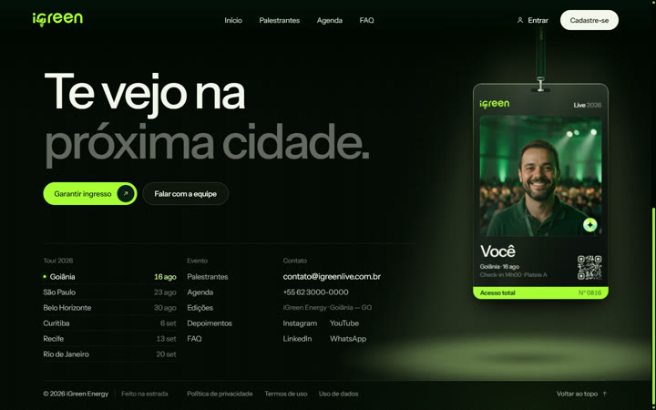
G3
Holofote
Palco escuro: um único refletor acende de cima, o crachá cai dentro da luz e o facho acompanha o balanço como um canhão seguidor.
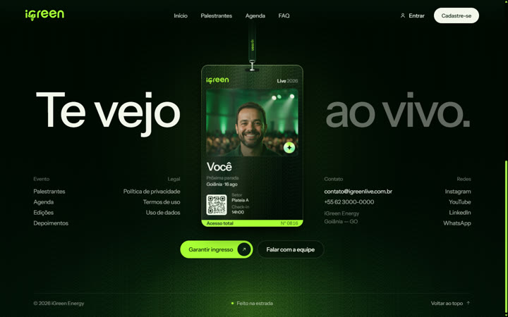
G5
Crachá no centro
Composição simétrica: "Te vejo | ao vivo." se abre em volta do crachá pendurado no eixo central, com os links espelhados dos dois lados.
Footer · 8 propostas
Oito footers
para fechar o site
Cada página começa no FAQ, como no site, para dar para sentir a passagem. Role devagar até o fim: quase tudo acompanha a rolagem.
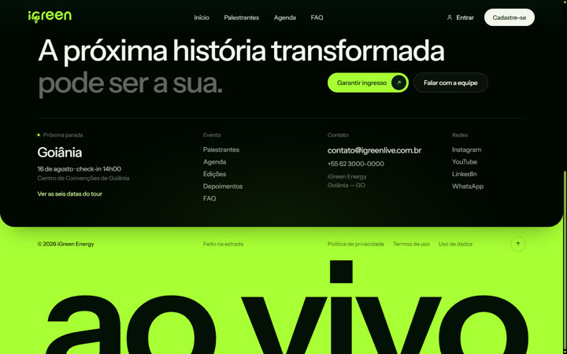
A
Bloco lima
A área escura sobe como uma folha e descobre uma faixa lima de ponta a ponta. As letras de "ao vivo" sobem uma a uma com a rolagem e terminam gigantes, cortadas pela borda.
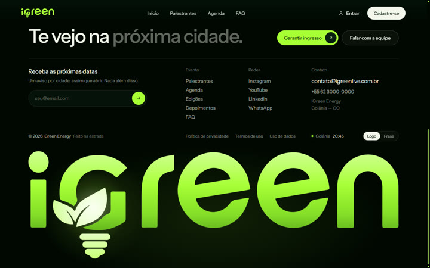
B
Logo gigante
O logo igreen ocupa a largura toda e acende da esquerda para a direita; a lâmpada do "g" acende por último e depois a luz segue o cursor. Tem um seletor para comparar com a frase "iGreen Live".
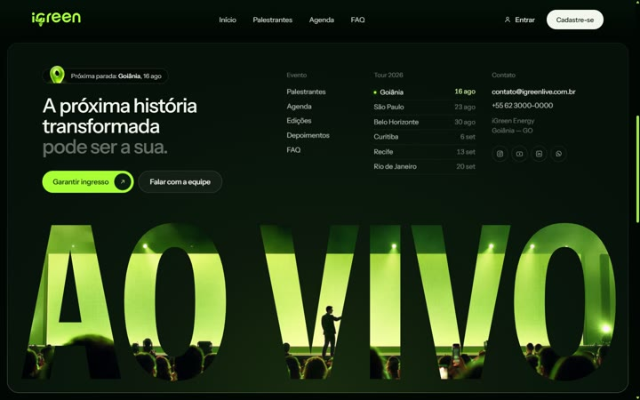
C
Palavra perfurada
"AO VIVO" vazado no painel mostra o palco por trás, com parallax. Depois a câmera atravessa o I e a foto toma a tela, com a chamada final por cima.
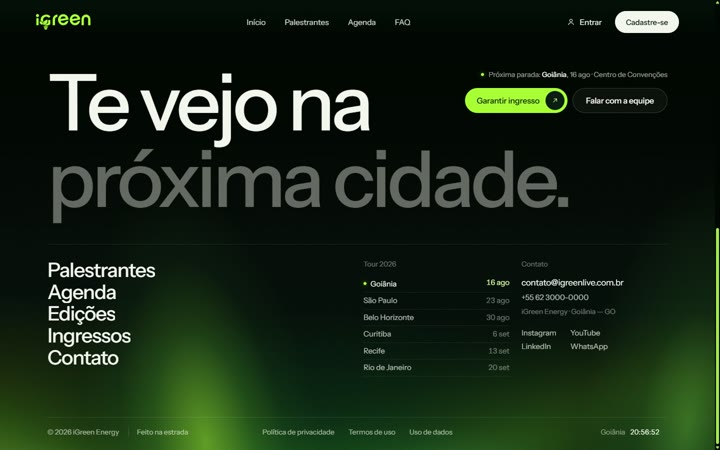
D
Aurora viva
Sem foto: uma névoa verde de palco sobe do chão e segue de leve o cursor. A frase entra em foco linha a linha, com menu grande, as datas do tour e um relógio de Goiânia.
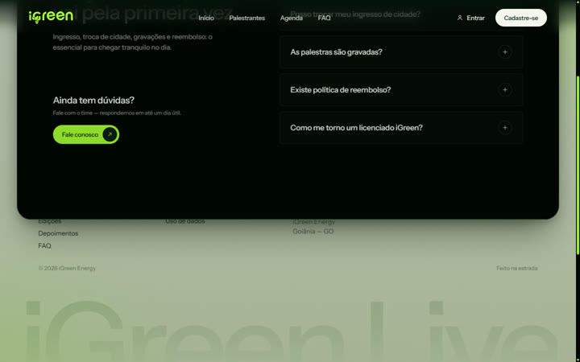
E
Gaveta
O FAQ vira uma folha que encolhe, arredonda os cantos e sobe, descobrindo um ambiente verde-sálvia que estava por baixo, com "iGreen Live" gigante e apagado no chão.
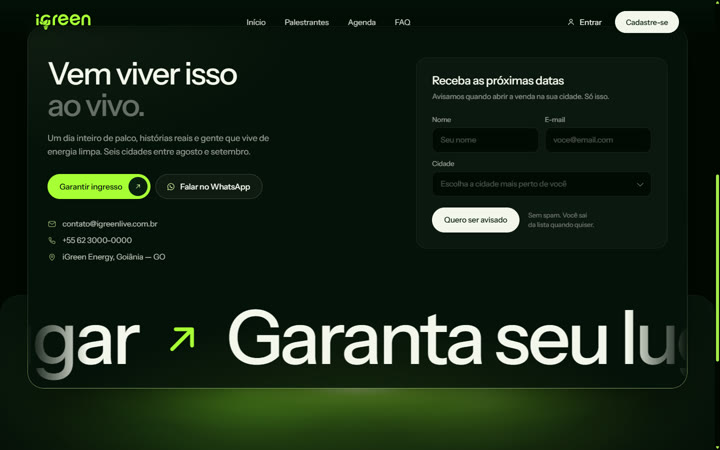
F
Letreiro
Um card escuro com chamada, formulário e o letreiro gigante "Garanta seu lugar", que acelera e inclina com a rolagem e fica lima no hover. Um brilho verde vaza por baixo do card.
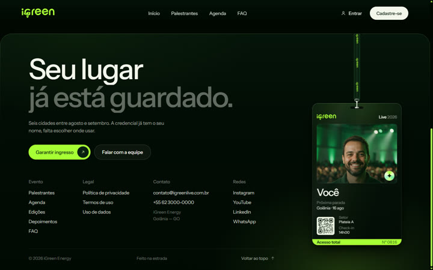
G
Crachá
Uma credencial do iGreen Live cai pendurada num cordão e balança com física de verdade. Dá para agarrar, arremessar e ver o brilho holográfico mudar com a inclinação.
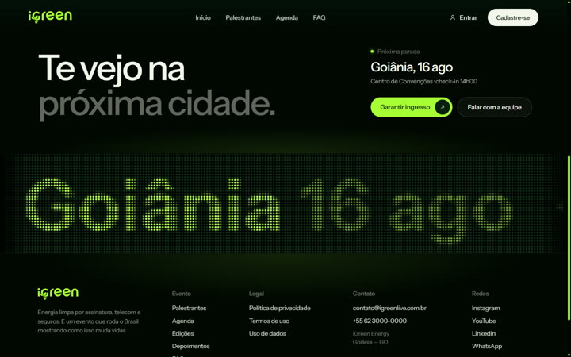
H
Telão de LED
Um telão de LED de ponta a ponta liga com uma varredura e passa as próximas paradas do tour. O cursor funciona como um refletor sobre os pontos.
Selos das seções
Selos, rodada 3
a partir da 09
A 09 (borda de energia), quatro variações com o ícone saindo do selo e quatro ideias fora da caixa. A rodada 2 continua em badges-rodada2.html.
Rodada mais recente
As escolhidas,
em novas versões
Cópias das propostas que você destacou, com os ajustes pedidos. As originais continuam intactas mais abaixo.
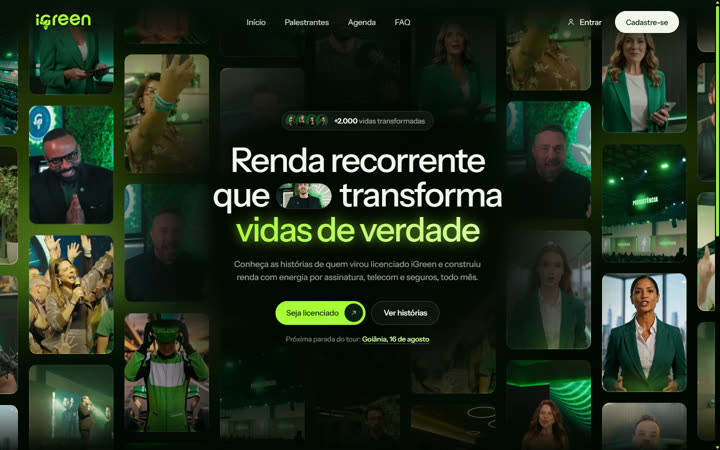
C + C2
Carga radial
O meio-termo entre a C e a C2: cards da C2, texto entre os dois tamanhos e véu escuro maior. A transformação é um círculo que nasce no vídeo do título e cresce pela parede.
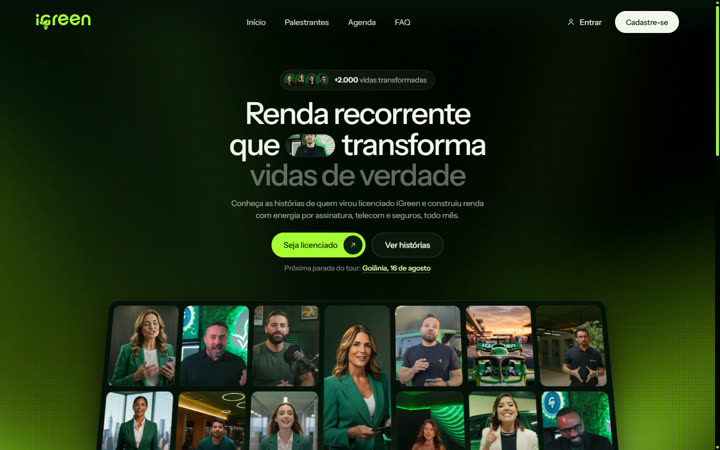
F2
Tela, com respiro
A F2 sem a imagem borrada no fundo e com mais espaço acima e abaixo do título.
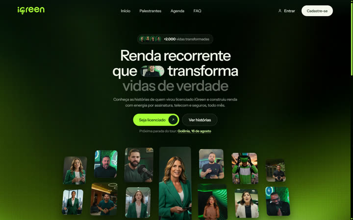
F2
Cards soltos
A mesma ideia da F2, mas com os cards soltos e em escada no lugar da tela fechada, sem fundo borrado e com o título respirando.
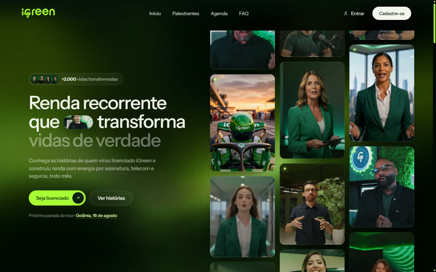
E + seção seguinte
Correnteza em sequência
A hero E emendada na seção "Trabalho não é só renda…": as vidas se reúnem, voam para as mídias da seção e a frase se preenche, numa rolagem contínua.
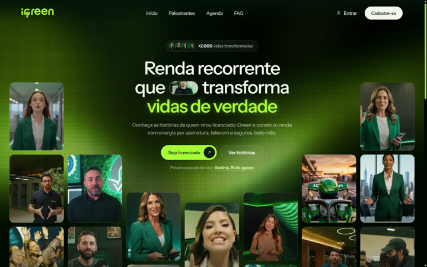
B + hero atual
O vale sobe
A hero atual do site com a ignição e o hover da B. Na rolagem, as colunas do vale sobem e viram um mural completo com a frase no centro.
17 propostas para a hero
O antes e depois
de cada história
Jeitos diferentes de contar a transformação: as histórias começam paradas e apagadas, e ganham cor e movimento quando a energia chega até elas.
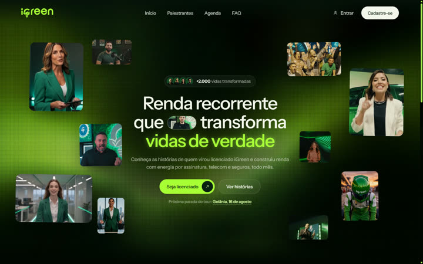
Hero B
Ignição
Cards em profundidade em volta do título. "Vidas de verdade" acende em lima e transforma tudo em cor de uma vez; depois a cena fica calma.
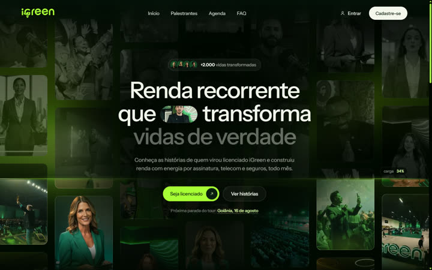
Hero C
Carga — original
A primeira versão restaurada: parede de colunas em preto e branco, a linha de carga para em 32% e a rolagem completa a carga.
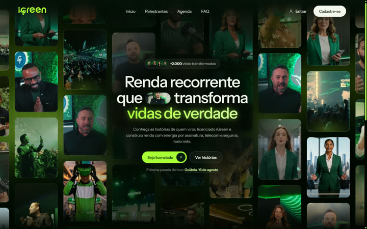
Hero C2
Carga completa
A parede original com cards um pouco menores. A carga sobe até 100% na entrada e cada card reage quando a luz passa por ele.
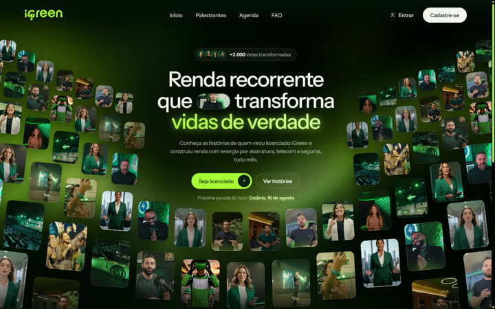
Hero C3
Arquibancada
Uma arena de vidas em arcos ao redor do título. Uma "ola" colore tudo enquanto o selo conta até +2.000.
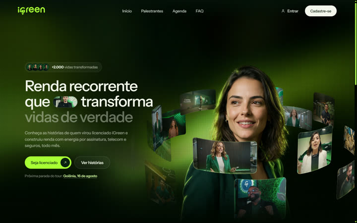
Hero D
Retrato
A licenciada à direita com um anel de telas curvas girando em volta dela. Agora sem nenhuma tela piscando.
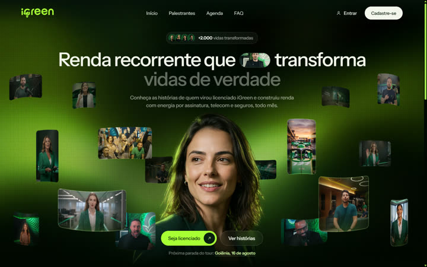
Hero D2
Retrato ao centro
Composição de cartaz: a frase no alto, ela no centro e uma constelação de telas curvas em três profundidades.
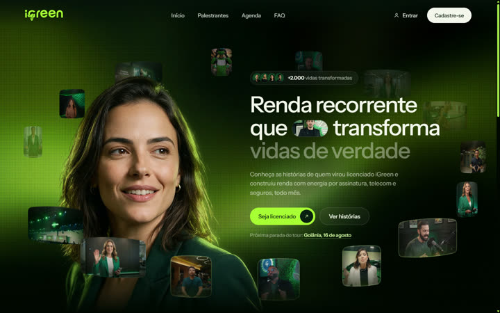
Hero D3
Órbita
Ela grande à esquerda, olhando para o texto; uma órbita larga de telas atravessa a tela e envolve os dois.
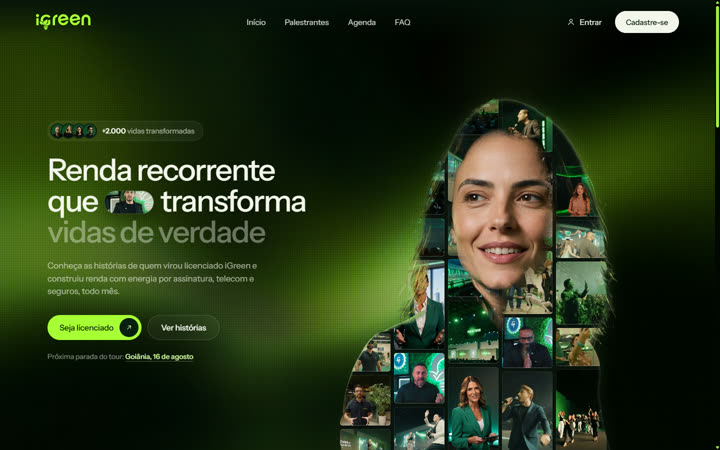
Hero D4
Dupla exposição
A silhueta dela é uma janela cheia de histórias. A luz sobe por dentro dela, e a rolagem entra no mosaico até a frase final.
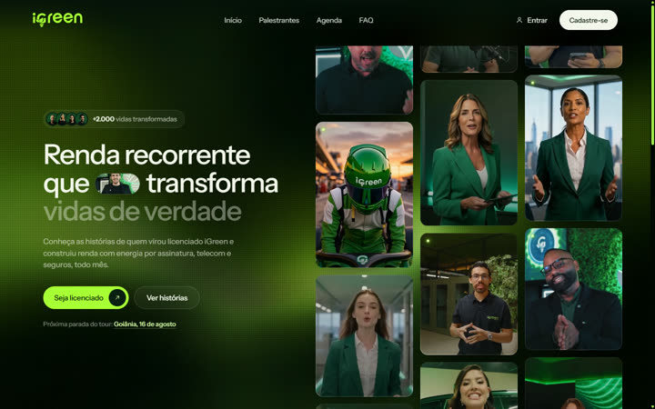
Hero E
Correnteza
Refeita: texto à esquerda e três colunas de vídeos correndo à direita. Uma luz diagonal colore tudo de uma vez.
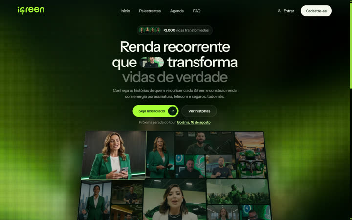
Hero F
Tela
Uma tela de cinema inclinada com um mosaico de 13 vidas; uma frente de luz curva passa do cinza para a cor.
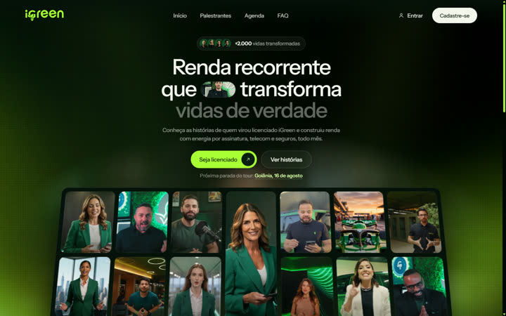
Hero F2
Tela de cards
A mesma tela feita de 13 cards separados, no padrão da hero atual. Na rolagem ela fica de frente e termina numa frase.
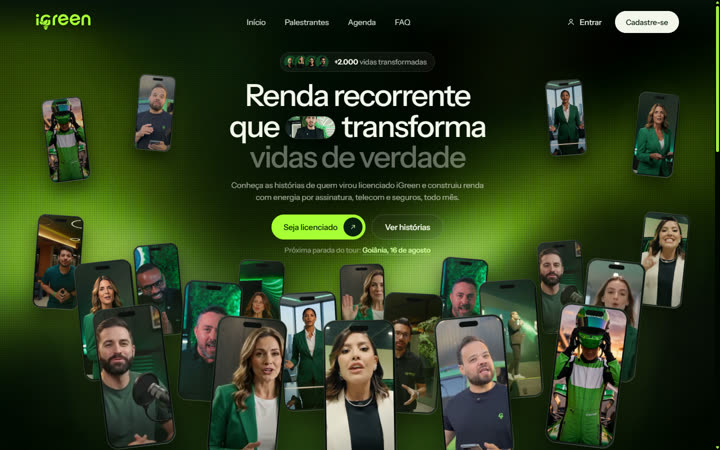
Hero F3
Plateia
22 celulares erguidos numa plateia, cada um com uma vida. A arena acende uma vez e a câmera sobe até a frase.
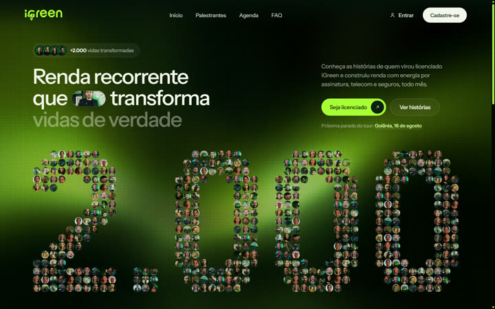
Hero G
Mosaico de vidas
O número 2.000 feito de 453 pessoas. O mouse é uma lupa e a rolagem mergulha no ponto final do número.
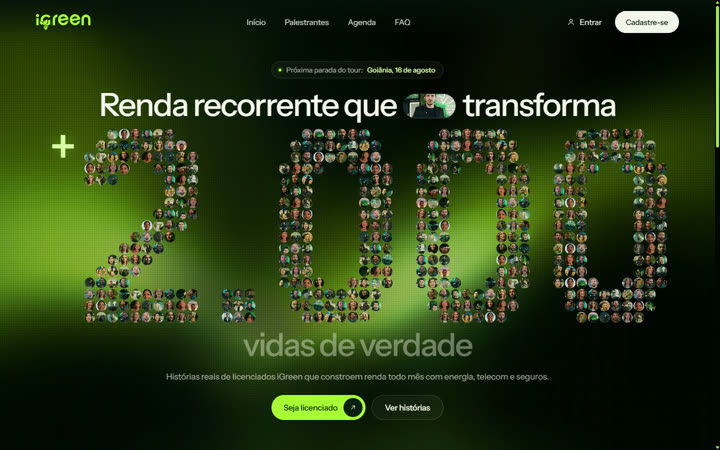
Hero G2
Frase única
O +2.000 feito de pessoas vira uma palavra no meio da frase, com o texto numa coluna só.
Hero G3
A multidão
Na rolagem, o número vira uma multidão que se abre como cortina para os vídeos e a frase final.
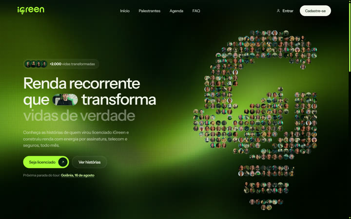
Hero G4
Lâmpada
A lâmpada em "G" do logo feita de 343 pessoas. Ela liga uma vez e, na rolagem, espalha raios de pessoas.
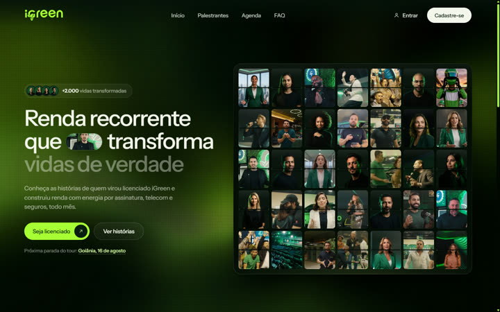
Hero H
Painel de embarque
Um painel de aeroporto com 35 rostos que vira do cinza para a cor. Na rolagem, as letras formam "Próxima parada: Goiânia".